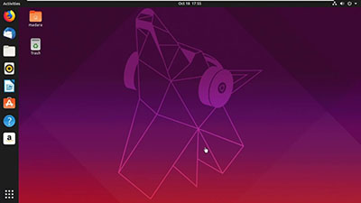

Ubuntu
Начнём с очевидного, первое, что посоветует новичку любой пользователь Linux - Ubuntu. Это сборка на ядре Debian с регулярными обновлениями и поддержкой, крайне доброжелательная к новым пользователям.
Fedora и Korora
Одним из конкурентов Ubuntu для начинающих считается Fedora. Он так же стабильный, прост в освоении и богат предустановленными приложениями. Одним из популярных дистрибутивов на основе Fedora является Korora, который позиционируется как ОS как для начинающих, так и для профессионалов. Korora больше не поддерживается.
ArchLinux: Antegros и Manjaro
Существуют 2 довольно простых дистрибутива на ядре ArchLinux: Antegros и Manjaro Linux. Несмотря на негостеприимность ArchLinux, эти два дистрибутива снабжены собственными инсталяторами и достаточно просты в освоении. Antegros является устаревшим и больше не поддерживается.
OpenSUSE
Стоит отметить OpenSUSE, также являющийся одним из самых простых и стабильных дистрибутивов Linux для начинающих.
Kubuntu
Kubuntu — один из самых известных дистрибутивов с KDE. Он основан на Ubuntu, а это значит, что у вас не будет проблем с совместимостью приложений. Kubuntu красив, функционален и легко настраивается. С ним легко справятся даже начинающие пользователи.